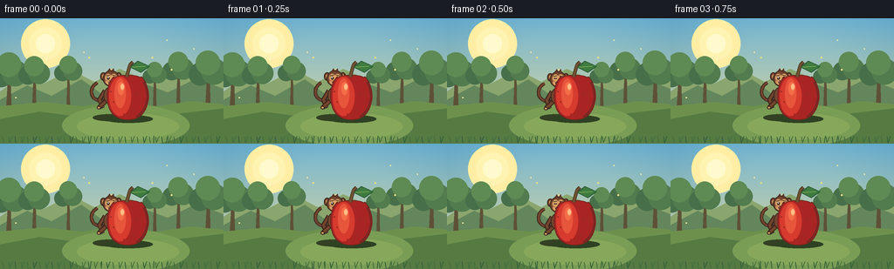
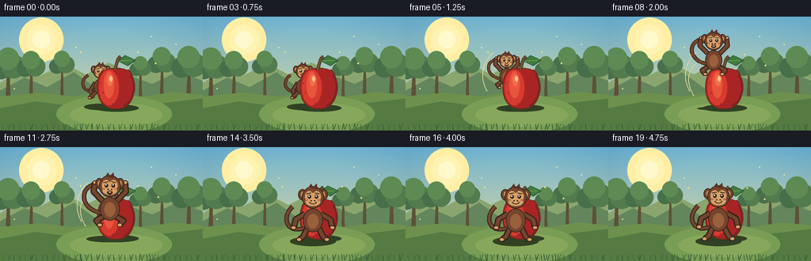

CODING AGENTS AS PIXEL WORLD MODELS
traex/GPT-5.6-Sol · dynamic_spatial_relationship_0054
点击播放 · 原生 RGB 像素
逐轮保存的候选
回放视频、检查图与代码变化。
每份候选均可单独播放。实际图片检查记录在下方工具轨迹中。
候选 01播放与检查图
点击播放 · 原生 RGB 像素


展开代码变化
--- 上一保存版本 +++ 本次保存版本 @@ -0,0 +1,224 @@ +from pathlib import Path +import math +import numpy as np +from PIL import Image, ImageDraw, ImageFilter +import artifact_io + +W, H, N = 256, 144, 20 +SS = 3 +rng = np.random.default_rng(54) + +def sc(v): return int(round(v * SS)) +def pts(seq): return [(sc(x), sc(y)) for x,y in seq] +def ellipse(d, box, fill, outline=None, width=1): + d.ellipse(tuple(sc(v) for v in box), fill=fill, outline=outline, width=sc(width) if outline else 1) +def polygon(d, p, fill, outline=None, width=1): + d.polygon(pts(p), fill=fill) + if outline: d.line(pts(p+[p[0]]), fill=outline, width=sc(width), joint='curve') +def line(d,p,fill,width): d.line(pts(p), fill=fill, width=sc(width), joint='curve') + +def bezier(p0,p1,p2,p3,n=30): + out=[] + for t in np.linspace(0,1,n): + q=1-t + out.append((q**3*p0[0]+3*q*q*t*p1[0]+3*q*t*t*p2[0]+t**3*p3[0], + q**3*p0[1]+3*q*q*t*p1[1]+3*q*t*t*p2[1]+t**3*p3[1])) + return out + +def smooth(x): return x*x*(3-2*x) + +def make_background(): + # warm illustrated orchard with a light center stage + yy=np.linspace(0,1,H*SS)[:,None,None] + top=np.array([115,181,210],float); bot=np.array([235,220,151],float) + arr=np.tile(top*(1-yy)+bot*yy,(1,W*SS,1)) + # vignette and sunshine + Y,X=np.mgrid[0:H*SS,0:W*SS] + vign=np.sqrt(((X-W*SS*.52)/(W*SS*.72))**2+((Y-H*SS*.44)/(H*SS*.92))**2) + arr-=np.clip(vign-.35,0,.8)[...,None]*np.array([35,27,14]) + arr=np.uint8(np.clip(arr,0,255)) + im=Image.fromarray(arr,'RGB'); d=ImageDraw.Draw(im) + # sun glow + for r,a in [(28,(255,238,163)),(19,(255,243,178)),(11,(255,249,205))]: + ellipse(d,(52-r,29-r,52+r,29+r),a) + # distant hills + polygon(d,[(-5,87),(25,67),(50,75),(81,59),(108,73),(137,58),(168,72),(198,55),(231,68),(261,55),(261,112),(-5,112)],'#8aa66e') + polygon(d,[(-5,96),(31,77),(59,89),(93,70),(122,91),(157,72),(192,85),(225,69),(261,83),(261,119),(-5,119)],'#64865c') + # distant orchard trees + for x,y,s in [(10,68,1.0),(39,67,.82),(78,64,.72),(204,62,.82),(238,66,1.0),(177,68,.62)]: + polygon(d,[(x-3*s,104),(x+3*s,104),(x+2*s,y),(x-1*s,y)],'#5d5137') + for dx,dy,r,c in [(-9,-2,13,'#476f49'),(7,-5,15,'#527c4e'),(0,-15,14,'#5e8a54')]: + ellipse(d,(x+(dx-r)*s,y+(dy-r)*s,x+(dx+r)*s,y+(dy+r)*s),c) + # grassy ground + polygon(d,[(-2,101),(50,96),(94,101),(136,94),(180,101),(219,95),(258,99),(258,146),(-2,146)],'#6d914d') + polygon(d,[(-2,116),(45,107),(91,113),(139,103),(191,111),(258,103),(258,146),(-2,146)],'#557b43') + # stage patch + ellipse(d,(71,99,217,147),'#799d55') + ellipse(d,(88,109,205,139),'#87a85b') + # foreground tufts + for x in range(4,256,7): + h=2+((x*17)%7) + col='#436d3d' if x%3 else '#355f3b' + line(d,[(x,143),(x-1,143-h)],col,1) + if x%2: line(d,[(x,143),(x+3,139-h/2)],col,1) + # ambient floating specks fixed + for x,y,r in [(32,42,1),(69,20,.8),(222,35,.8),(191,25,.6),(96,39,.6),(18,91,.8)]: + ellipse(d,(x-r,y-r,x+r,y+r),(246,235,166)) + return im + +BG=make_background() + +def draw_apple(im, x=146, y=89, pulse=0.0): + d=ImageDraw.Draw(im) + # contact shadow + ellipse(d,(x-27,y+22,x+29,y+31),(47,65,35)) + # apple silhouette using organic polygon + shape=[] + for a in np.linspace(0,2*math.pi,90,endpoint=False): + # a=0 right, pi/2 bottom after coordinates y+sin + rx=25*(1-.07*math.cos(2*a)) + ry=28*(1+.02*math.cos(2*a)) + xx=x+rx*math.cos(a) + yy=y+ry*math.sin(a) + # top cleft + if math.sin(a)<-.8: yy += 4*(1-abs(math.cos(a))) + shape.append((xx,yy)) + polygon(d,shape,'#a92524','#6e261d',1) + # dimensional red overlays + ellipse(d,(x-21,y-22,x+4,y+23),'#d73b2e') + ellipse(d,(x-15,y-20,x-2,y+14),'#e8553d') + ellipse(d,(x-11,y-16,x-4,y-1),(244,111,72)) + ellipse(d,(x-8,y-14,x-4,y-7),(255,190,135)) + # shaded lower/right edge + line(d,bezier((x+18,y-16),(x+28,y-2),(x+22,y+18),(x+10,y+24)), '#7d2622',3) + # little texture + for dx,dy in [(-16,7),(11,-2),(6,17),(-4,21),(17,7),(-19,-5)]: + ellipse(d,(x+dx-.7,y+dy-.7,x+dx+.7,y+dy+.7),'#8d2b22') + # stem behind leaf but visually part of apple + line(d,[(x-1,y-22),(x+3,y-36),(x+6,y-39)],'#4b3b24',4) + line(d,[(x-1,y-22),(x+3,y-36),(x+6,y-39)],'#755435',2) + leaf=[(x+3,y-33),(x+12,y-40),(x+25,y-34),(x+15,y-27)] + polygon(d,leaf,'#3f7c40','#2e5b34',1) + line(d,[(x+5,y-33),(x+20,y-34)],'#82a952',1) + +def monkey_coords(x,y,s,p): + return (x+p[0]*s,y+p[1]*s) + +def draw_monkey(im,x,y,s,pose,front=True,blink=False): + d=ImageDraw.Draw(im) + outline='#3a251d'; dark='#593426'; fur='#75452e'; light='#9a603b'; skin='#d7a267'; blush='#bf7656' + C=lambda p: monkey_coords(x,y,s,p) + # tail goes behind body; expressive curl to left + if pose=='crouch': + tail=bezier(C((-7,9)),C((-30,15)),C((-35,-9)),C((-20,-17))) + elif pose=='jump': + tail=bezier(C((-8,7)),C((-33,3)),C((-34,-21)),C((-17,-25))) + else: + tail=bezier(C((-8,10)),C((-29,18)),C((-35,-2)),C((-22,-13))) + line(d,tail,outline,max(5*s,2)) + line(d,tail,fur,max(3*s,1)) + # limb positions and body + if pose=='crouch': + arms=[((-9,-5),(-17,8),(-13,18)),((9,-5),(16,8),(13,18))] + legs=[((-7,10),(-15,17),(-18,20)),((7,10),(15,17),(18,20))] + elif pose=='jump': + arms=[((-8,-7),(-18,-17),(-16,-27)),((8,-7),(18,-17),(17,-27))] + legs=[((-6,10),(-15,15),(-11,20)),((6,10),(15,15),(11,20))] + else: + arms=[((-9,-5),(-19,1),(-21,10)),((9,-5),(19,1),(21,10))] + legs=[((-6,10),(-11,20),(-15,23)),((6,10),(11,20),(15,23))] + # far limbs + for limb in arms+legs: + line(d,[C(q) for q in limb],outline,max(7*s,2)) + line(d,[C(q) for q in limb],fur,max(4*s,1)) + ex,ey=C(limb[-1]); ellipse(d,(ex-3*s,ey-2.3*s,ex+3*s,ey+2.3*s),skin,outline,1) + # body with belly + bx0,by0=C((-11,-11)); bx1,by1=C((11,15)) + ellipse(d,(bx0,by0,bx1,by1),fur,outline,max(1,round(s))) + bx0,by0=C((-6,-5)); bx1,by1=C((6,11)) + ellipse(d,(bx0,by0,bx1,by1),light) + # ears and head + hx,hy=C((0,-22)) + ellipse(d,(hx-16*s,hy-10*s,hx-7*s,hy+2*s),fur,outline,1) + ellipse(d,(hx+7*s,hy-10*s,hx+16*s,hy+2*s),fur,outline,1) + ellipse(d,(hx-13*s,hy-7*s,hx-9*s,hy-1*s),skin) + ellipse(d,(hx+9*s,hy-7*s,hx+13*s,hy-1*s),skin) + ellipse(d,(hx-12*s,hy-13*s,hx+12*s,hy+11*s),fur,outline,max(1,round(s))) + # face mask heart-ish: brow ovals plus muzzle + ellipse(d,(hx-8.5*s,hy-8*s,hx+.5*s,hy+4*s),skin) + ellipse(d,(hx-.5*s,hy-8*s,hx+8.5*s,hy+4*s),skin) + ellipse(d,(hx-8*s,hy-1*s,hx+8*s,hy+8.5*s),skin) + # brows + line(d,[(hx-7*s,hy-5*s),(hx-2*s,hy-6*s)],outline,max(1.2*s,1)) + line(d,[(hx+2*s,hy-6*s),(hx+7*s,hy-5*s)],outline,max(1.2*s,1)) + # eyes + if blink: + line(d,[(hx-6*s,hy-2*s),(hx-2*s,hy-2*s)],outline,max(s,1)) + line(d,[(hx+2*s,hy-2*s),(hx+6*s,hy-2*s)],outline,max(s,1)) + else: + ellipse(d,(hx-5.8*s,hy-3.8*s,hx-2.0*s,hy+.5*s),outline) + ellipse(d,(hx+2.0*s,hy-3.8*s,hx+5.8*s,hy+.5*s),outline) + ellipse(d,(hx-4.8*s,hy-3.1*s,hx-3.6*s,hy-1.7*s),'white') + ellipse(d,(hx+3.0*s,hy-3.1*s,hx+4.2*s,hy-1.7*s),'white') + # nostrils and smile + ellipse(d,(hx-2.7*s,hy+2*s,hx-1.2*s,hy+3.3*s),outline) + ellipse(d,(hx+1.2*s,hy+2*s,hx+2.7*s,hy+3.3*s),outline) + if pose=='jump': + ellipse(d,(hx-3*s,hy+4*s,hx+3*s,hy+8*s),outline) + ellipse(d,(hx-1.7*s,hy+5*s,hx+1.7*s,hy+6.2*s),'#e9b18d') + else: + line(d,bezier((hx-4*s,hy+4*s),(hx-2*s,hy+7*s),(hx+2*s,hy+7*s),(hx+4*s,hy+4*s),12),outline,max(s,1)) + ellipse(d,(hx-8*s,hy+1*s,hx-5*s,hy+3*s),blush) + ellipse(d,(hx+5*s,hy+1*s,hx+8*s,hy+3*s),blush) + # forelock + polygon(d,[C((-5,-34)),C((-2,-38)),C((0,-34)),C((4,-38)),C((5,-32))],dark) + +def draw_frame(i): + im=BG.copy(); d=ImageDraw.Draw(im) + # subtle temporal motes / displaced leaves + for k in range(5): + x=102+k*24 + 2*math.sin(i*.3+k) + y=45+(k%3)*14 + (i*.35 if i>5 else 0) + ellipse(d,(x-1,y-1,x+1,y+1),(231,222,137)) + if i<=3: + x=127+0.5*math.sin(i*1.4); y=87 + (0.8 if i==2 else 0) + s=.78; pose='crouch'; front=False + elif i<=12: + u=(i-4)/8; e=smooth(u) + x=127+12*e + y=87+2*e-35*math.sin(math.pi*u) + s=.78+.38*e + pose='jump'; front=(i>=8) + else: + u=(i-13)/6 + x=139; y=89 + 3*math.sin(math.pi*min(1,u))*math.exp(-2*u) + s=1.16; pose='land'; front=True + # monkey shadow communicates movement toward viewer + if i<=3: shadow=(126,114,20,4) + elif i<=12: + u=(i-4)/8; shadow=(135,116,19+8*u, max(2,5-3*math.sin(math.pi*u))) + else: shadow=(139,119,29,6) + sx,sy,rx,ry=shadow + ellipse(d,(sx-rx,sy-ry,sx+rx,sy+ry),(50,65,35)) + # jump motion swooshes (behind everything) + if 5<=i<=11: + alpha_col='#d9d59d' + u=(i-4)/8 + line(d,bezier((103,94),(91,75),(100,54),(111,45)),alpha_col,1) + if i>=7: line(d,bezier((108,100),(96,81),(102,66),(111,59)),alpha_col,1) + # enforce depth ordering exactly: apple occludes monkey at start; monkey occludes apple after crossover + if not front: + draw_monkey(im,x,y,s,pose,front=False,blink=(i==2)) + draw_apple(im) + else: + draw_apple(im) + draw_monkey(im,x,y,s,pose,front=True,blink=(i==17)) + # animated grass overlap at very front + d=ImageDraw.Draw(im) + for gx in [103,116,176,190]: + line(d,[(gx,143),(gx+2*math.sin(i*.25+gx),135)],'#355f39',1) + return np.array(im.resize((W,H),Image.Resampling.LANCZOS),dtype=np.uint8) + +frames=np.stack([draw_frame(i) for i in range(N)]) +assert frames.shape==(20,144,256,3) and frames.dtype==np.uint8 +artifact_io.save(frames,Path(__file__).resolve().parent)
可观测工具轨迹
实际执行的命令与返回图片。
命令 1exit 0
/bin/bash -lc "cat prompt.txt && printf '\\n---RULES---\\n' && cat GENERATION_RULES.md && printf '\\n---SPEC---\\n' && cat task_spec.json"
命令 2exit 0
/bin/bash -lc "find . -maxdepth 2 -type f -printf '%p\\n' | sort"
命令 3exit 0
/bin/bash -lc 'cat artifact_io.py'
命令 4exit 0
/bin/bash -lc "cat > generate.py <<'PY'
from pathlib import Path
import math
import numpy as np
from PIL import Image, ImageDraw, ImageFilter
import artifact_io
W, H, N = 256, 144, 20
SS = 3
rng = np.random.default_rng(54)
def sc(v): return int(round(v * SS))
def pts(seq): return [(sc(x), sc(y)) for x,y in seq]
def ellipse(d, box, fill, outline=None, width=1):
d.ellipse(tuple(sc(v) for v in box), fill=fill, outline=outline, width=sc(width) if outline else 1)
def polygon(d, p, fill, outline=None, width=1):
d.polygon(pts(p), fill=fill)
if outline: d.line(pts(p+[p[0]]), fill=outline, width=sc(width), joint='curve')
def line(d,p,fill,width): d.line(pts(p), fill=fill, width=sc(width), joint='curve')
def bezier(p0,p1,p2,p3,n=30):
out=[]
for t in np.linspace(0,1,n):
q=1-t
out.append((q**3*p0[0]+3*q*q*t*p1[0]+3*q*t*t*p2[0]+t**3*p3[0],
q**3*p0[1]+3*q*q*t*p1[1]+3*q*t*t*p2[1]+t**3*p3[1]))
return out
def smooth(x): return x*x*(3-2*x)
def make_background():
# warm illustrated orchard with a light center stage
yy=np.linspace(0,1,H*SS)[:,None,None]
top=np.array([115,181,210],float); bot=np.array([235,220,151],float)
arr=np.tile(top*(1-yy)+bot*yy,(1,W*SS,1))
# vignette and sunshine
Y,X=np.mgrid[0:H*SS,0:W*SS]
vign=np.sqrt(((X-W*SS*.52)/(W*SS*.72))**2+((Y-H*SS*.44)/(H*SS*.92))**2)
arr-=np.clip(vign-.35,0,.8)[...,None]*np.array([35,27,14])
arr=np.uint8(np.clip(arr,0,255))
im=Image.fromarray(arr,'RGB'); d=ImageDraw.Draw(im)
# sun glow
for r,a in [(28,(255,238,163)),(19,(255,243,178)),(11,(255,249,205))]:
ellipse(d,(52-r,29-r,52+r,29+r),a)
# distant hills
polygon(d,[(-5,87),(25,67),(50,75),(81,59),(108,73),(137,58),(168,72),(198,55),(231,68),(261,55),(261,112),(-5,112)],'#8aa66e')
polygon(d,[(-5,96),(31,77),(59,89),(93,70),(122,91),(157,72),(192,85),(225,69),(261,83),(261,119),(-5,119)],'#64865c')
# distant orchard trees
for x,y,s in [(10,68,1.0),(39,67,.82),(78,64,.72),(204,62,.82),(238,66,1.0),(177,68,.62)]:
polygon(d,[(x-3*s,104),(x+3*s,104),(x+2*s,y),(x-1*s,y)],'#5d5137')
for dx,dy,r,c in [(-9,-2,13,'#476f49'),(7,-5,15,'#527c4e'),(0,-15,14,'#5e8a54')]:
ellipse(d,(x+(dx-r)*s,y+(dy-r)*s,x+(dx+r)*s,y+(dy+r)*s),c)
# grassy ground
polygon(d,[(-2,101),(50,96),(94,101),(136,94),(180,101),(219,95),(258,99),(258,146),(-2,146)],'#6d914d')
polygon(d,[(-2,116),(45,107),(91,113),(139,103),(191,111),(258,103),(258,146),(-2,146)],'#557b43')
# stage patch
ellipse(d,(71,99,217,147),'#799d55')
ellipse(d,(88,109,205,139),'#87a85b')
# foreground tufts
for x in range(4,256,7):
h=2+((x*17)%7)
col='#436d3d' if x%3 else '#355f3b'
line(d,[(x,143),(x-1,143-h)],col,1)
if x%2: line(d,[(x,143),(x+3,139-h/2)],col,1)
# ambient floating specks fixed
for x,y,r in [(32,42,1),(69,20,.8),(222,35,.8),(191,25,.6),(96,39,.6),(18,91,.8)]:
ellipse(d,(x-r,y-r,x+r,y+r),(246,235,166))
return im
BG=make_background()
def draw_apple(im, x=146, y=89, pulse=0.0):
d=ImageDraw.Draw(im)
# contact shadow
ellipse(d,(x-27,y+22,x+29,y+31),(47,65,35))
# apple silhouette using organic polygon
shape=[]
for a in np.linspace(0,2*math.pi,90,endpoint=False):
# a=0 right, pi/2 bottom after coordinates y+sin
rx=25*(1-.07*math.cos(2*a))
ry=28*(1+.02*math.cos(2*a))
xx=x+rx*math.cos(a)
yy=y+ry*math.sin(a)
# top cleft
if math.sin(a)<-.8: yy += 4*(1-abs(math.cos(a)))
shape.append((xx,yy))
polygon(d,shape,'#a92524','#6e261d',1)
# dimensional red overlays
ellipse(d,(x-21,y-22,x+4,y+23),'#d73b2e')
ellipse(d,(x-15,y-20,x-2,y+14),'#e8553d')
ellipse(d,(x-11,y-16,x-4,y-1),(244,111,72))
ellipse(d,(x-8,y-14,x-4,y-7),(255,190,135))
# shaded lower/right edge
line(d,bezier((x+18,y-16),(x+28,y-2),(x+22,y+18),(x+10,y+24)), '#7d2622',3)
# little texture
for dx,dy in [(-16,7),(11,-2),(6,17),(-4,21),(17,7),(-19,-5)]:
ellipse(d,(x+dx-.7,y+dy-.7,x+dx+.7,y+dy+.7),'#8d2b22')
# stem behind leaf but visually part of apple
line(d,[(x-1,y-22),(x+3,y-36),(x+6,y-39)],'#4b3b24',4)
line(d,[(x-1,y-22),(x+3,y-36),(x+6,y-39)],'#755435',2)
leaf=[(x+3,y-33),(x+12,y-40),(x+25,y-34),(x+15,y-27)]
polygon(d,leaf,'#3f7c40','#2e5b34',1)
line(d,[(x+5,y-33),(x+20,y-34)],'#82a952',1)
def monkey_coords(x,y,s,p):
return (x+p[0]*s,y+p[1]*s)
def draw_monkey(im,x,y,s,pose,front=True,blink=False):
d=ImageDraw.Draw(im)
outline='#3a251d'; dark='#593426'; fur='#75452e'; light='#9a603b'; skin='#d7a267'; blush='#bf7656'
C=lambda p: monkey_coords(x,y,s,p)
# tail goes behind body; expressive curl to left
if pose=='crouch':
tail=bezier(C((-7,9)),C((-30,15)),C((-35,-9)),C((-20,-17)))
elif pose=='jump':
tail=bezier(C((-8,7)),C((-33,3)),C((-34,-21)),C((-17,-25)))
else:
tail=bezier(C((-8,10)),C((-29,18)),C((-35,-2)),C((-22,-13)))
line(d,tail,outline,max(5*s,2))
line(d,tail,fur,max(3*s,1))
# limb positions and body
if pose=='crouch':
arms=[((-9,-5),(-17,8),(-13,18)),((9,-5),(16,8),(13,18))]
legs=[((-7,10),(-15,17),(-18,20)),((7,10),(15,17),(18,20))]
elif pose=='jump':
arms=[((-8,-7),(-18,-17),(-16,-27)),((8,-7),(18,-17),(17,-27))]
legs=[((-6,10),(-15,15),(-11,20)),((6,10),(15,15),(11,20))]
else:
arms=[((-9,-5),(-19,1),(-21,10)),((9,-5),(19,1),(21,10))]
legs=[((-6,10),(-11,20),(-15,23)),((6,10),(11,20),(15,23))]
# far limbs
for limb in arms+legs:
line(d,[C(q) for q in limb],outline,max(7*s,2))
line(d,[C(q) for q in limb],fur,max(4*s,1))
ex,ey=C(limb[-1]); ellipse(d,(ex-3*s,ey-2.3*s,ex+3*s,ey+2.3*s),skin,outline,1)
# body with belly
bx0,by0=C((-11,-11)); bx1,by1=C((11,15))
ellipse(d,(bx0,by0,bx1,by1),fur,outline,max(1,round(s)))
bx0,by0=C((-6,-5)); bx1,by1=C((6,11))
ellipse(d,(bx0,by0,bx1,by1),light)
# ears and head
hx,hy=C((0,-22))
ellipse(d,(hx-16*s,hy-10*s,hx-7*s,hy+2*s),fur,outline,1)
ellipse(d,(hx+7*s,hy-10*s,hx+16*s,hy+2*s),fur,outline,1)
ellipse(d,(hx-13*s,hy-7*s,hx-9*s,hy-1*s),skin)
ellipse(d,(hx+9*s,hy-7*s,hx+13*s,hy-1*s),skin)
ellipse(d,(hx-12*s,hy-13*s,hx+12*s,hy+11*s),fur,outline,max(1,round(s)))
# face mask heart-ish: brow ovals plus muzzle
ellipse(d,(hx-8.5*s,hy-8*s,hx+.5*s,hy+4*s),skin)
ellipse(d,(hx-.5*s,hy-8*s,hx+8.5*s,hy+4*s),skin)
ellipse(d,(hx-8*s,hy-1*s,hx+8*s,hy+8.5*s),skin)
# brows
line(d,[(hx-7*s,hy-5*s),(hx-2*s,hy-6*s)],outline,max(1.2*s,1))
line(d,[(hx+2*s,hy-6*s),(hx+7*s,hy-5*s)],outline,max(1.2*s,1))
# eyes
if blink:
line(d,[(hx-6*s,hy-2*s),(hx-2*s,hy-2*s)],outline,max(s,1))
line(d,[(hx+2*s,hy-2*s),(hx+6*s,hy-2*s)],outline,max(s,1))
else:
ellipse(d,(hx-5.8*s,hy-3.8*s,hx-2.0*s,hy+.5*s),outline)
ellipse(d,(hx+2.0*s,hy-3.8*s,hx+5.8*s,hy+.5*s),outline)
ellipse(d,(hx-4.8*s,hy-3.1*s,hx-3.6*s,hy-1.7*s),'white')
ellipse(d,(hx+3.0*s,hy-3.1*s,hx+4.2*s,hy-1.7*s),'white')
# nostrils and smile
ellipse(d,(hx-2.7*s,hy+2*s,hx-1.2*s,hy+3.3*s),outline)
ellipse(d,(hx+1.2*s,hy+2*s,hx+2.7*s,hy+3.3*s),outline)
if pose=='jump':
ellipse(d,(hx-3*s,hy+4*s,hx+3*s,hy+8*s),outline)
ellipse(d,(hx-1.7*s,hy+5*s,hx+1.7*s,hy+6.2*s),'#e9b18d')
else:
line(d,bezier((hx-4*s,hy+4*s),(hx-2*s,hy+7*s),(hx+2*s,hy+7*s),(hx+4*s,hy+4*s),12),outline,max(s,1))
ellipse(d,(hx-8*s,hy+1*s,hx-5*s,hy+3*s),blush)
ellipse(d,(hx+5*s,hy+1*s,hx+8*s,hy+3*s),blush)
# forelock
polygon(d,[C((-5,-34)),C((-2,-38)),C((0,-34)),C((4,-38)),C((5,-32))],dark)
def draw_frame(i):
im=BG.copy(); d=ImageDraw.Draw(im)
# subtle temporal motes / displaced leaves
for k in range(5):
x=102+k*24 + 2*math.sin(i*.3+k)
y=45+(k%3)*14 + (i*.35 if i>5 else 0)
ellipse(d,(x-1,y-1,x+1,y+1),(231,222,137))
if i<=3:
x=127+0.5*math.sin(i*1.4); y=87 + (0.8 if i==2 else 0)
s=.78; pose='crouch'; front=False
elif i<=12:
u=(i-4)/8; e=smooth(u)
x=127+12*e
y=87+2*e-35*math.sin(math.pi*u)
s=.78+.38*e
pose='jump'; front=(i>=8)
else:
u=(i-13)/6
x=139; y=89 + 3*math.sin(math.pi*min(1,u))*math.exp(-2*u)
s=1.16; pose='land'; front=True
# monkey shadow communicates movement toward viewer
if i<=3: shadow=(126,114,20,4)
elif i<=12:
u=(i-4)/8; shadow=(135,116,19+8*u, max(2,5-3*math.sin(math.pi*u)))
else: shadow=(139,119,29,6)
sx,sy,rx,ry=shadow
ellipse(d,(sx-rx,sy-ry,sx+rx,sy+ry),(50,65,35))
# jump motion swooshes (behind everything)
if 5<=i<=11:
alpha_col='#d9d59d'
u=(i-4)/8
line(d,bezier((103,94),(91,75),(100,54),(111,45)),alpha_col,1)
if i>=7: line(d,bezier((108,100),(96,81),(102,66),(111,59)),alpha_col,1)
# enforce depth ordering exactly: apple occludes monkey at start; monkey occludes apple after crossover
if not front:
draw_monkey(im,x,y,s,pose,front=False,blink=(i==2))
draw_apple(im)
else:
draw_apple(im)
draw_monkey(im,x,y,s,pose,front=True,blink=(i==17))
# animated grass overlap at very front
d=ImageDraw.Draw(im)
for gx in [103,116,176,190]:
line(d,[(gx,143),(gx+2*math.sin(i*.25+gx),135)],'#355f39',1)
return np.array(im.resize((W,H),Image.Resampling.LANCZOS),dtype=np.uint8)
frames=np.stack([draw_frame(i) for i in range(N)])
assert frames.shape==(20,144,256,3) and frames.dtype==np.uint8
artifact_io.save(frames,Path(__file__).resolve().parent)
PY
python generate.py
ls -lh pixels.npz inspection.png index.html frames/00.png frames/19.png"命令 5exit 0
/bin/bash -lc "python - <<'PY'
import numpy as np
z=np.load('pixels.npz')['pixels']
assert z.shape==(144,256,20)
assert z.dtype==np.uint32
# Report frame-to-frame pixel motion and RGB validity after unpacking.
p=z.transpose(2,0,1)
changed=[int(np.count_nonzero(p[i]"'!=p[i-1])) for i in range(1,20)]
print('"'pixels:',z.shape,z.dtype)
print('changed pixels/frame:',changed)
print('all frames dynamic:',all(n>0 for n in changed))
PY"视觉工具实际返回图片 1

保存候选 1 份；完成命令 5 次；可验证图片返回 1 张。原始 API 响应与完整日志保留在本地。